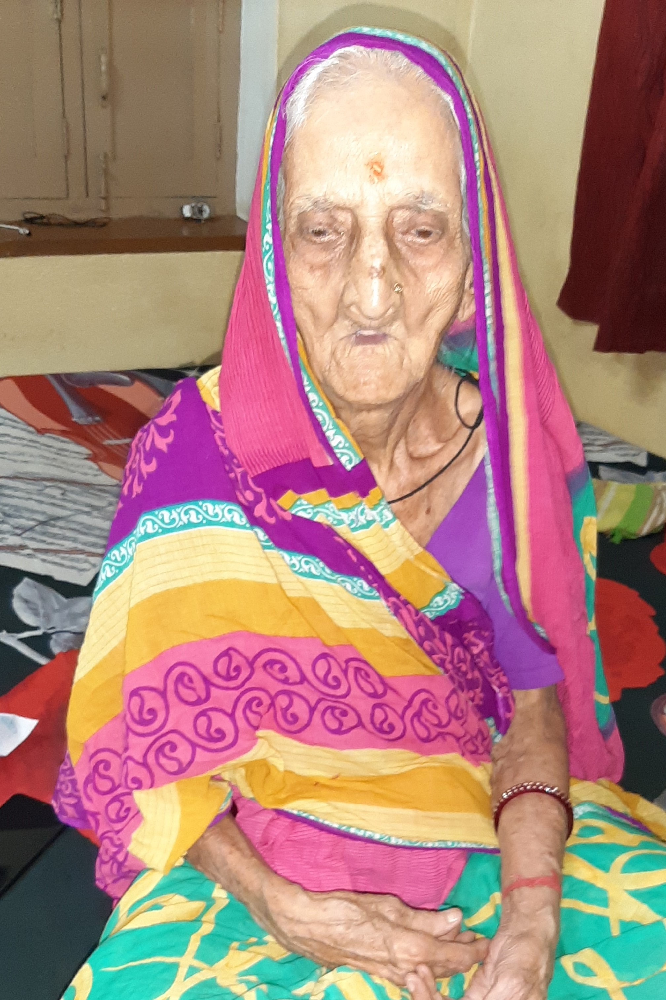
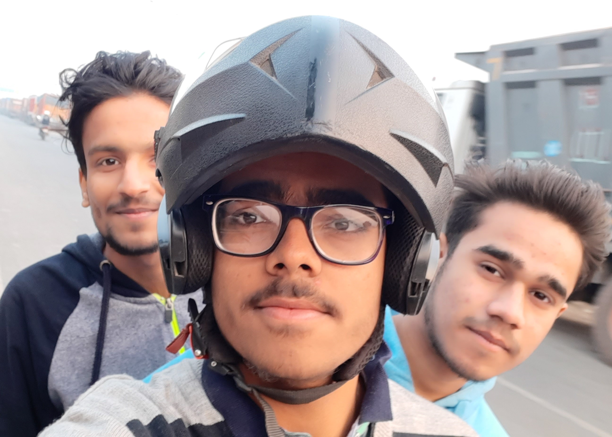

BIO-DATA
NAME - ROHIT SHARMA
DOB - 25th MARCH 2001
HOMETOWN - PATNA
HOBBIES - MUSIC, GAMING, CRICKET...
CLICK HERE TO VISIT FB ACCOUNT
CLICK HERE TO VISIT INSTAGRAM ACCOUNT
LET's JUMP INTO MY LIFE NOW
:>The most important persons in my life are undoubtedly my Father and Mother.
:>Wanna see the cute couples ? CLICK HERE
:>The rest 2 member of my family are my elder brother and my grandmother.

:>Started schooling at INFANT JESUS SCHOOL.It was the best phase which consists of the most beautiful and funny memories of my life. The line is correct that School life starts also with the tears and ends-up with the same too. My school life was also the same like evry1. It started with my tears as starter. Later, It was a complete main cousre with ingredients like frienships, fights, crushes, punishments and enjoyments. And at last, it ends-up with memories as deserts.
The best what happened to me is still the connections and the friendship with some of my school friends among which, the most important are these two.

#10yrs AND STILL COUNTING
:>Aftern the loads of memories of school-life, I entered into VISION CLASSES, PATNA for #JEE pREpration and end up with a decent result.
:>Here comes the most awaiting momemt (4th Aug 2019) i.e. "ENTERING THE NITW CAMPUS
 .
.
:>It had just been 6 months over there in my campus, but got hundreds of memories with many good friends.
It's difficult to mention all of them overe here, but there are some ir-replacable and special ones. To See Them CLICK HERE.
:>These 6 months had gone far good than my expectations. WONDERING HOW ?? The answer is below.
->Though the taste of mess food isn't delicious, but eating it with ur crazy friends along with their talks make it good.
->Though the classes are boring, but sleeping in those classes with ur bench mates has it's own fun.
->Though u don't study the whole semester, but studying the whole syllabus in the last night before exam has it's own fun.
->Though u are away from your family, but spending time with the family full of F.R.I.E.N.D.S. has its own excitement.